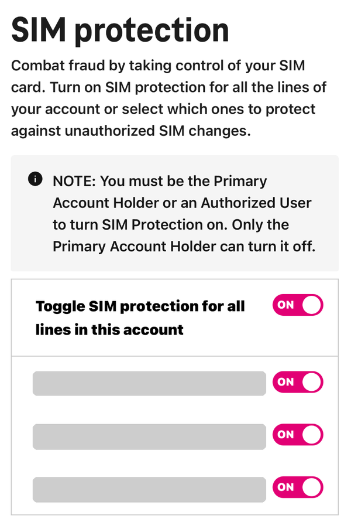

It starts with no bars
You’re going about your day and then suddenly your phone says “SOS only.” No bars, no data. You think it’s a bad signal and you restart your phone. Still nothing. Then emails begin to appear on your laptop. Password reset requests for your email, your bank, your Venmo maybe.
What’s happened is that someone has persuaded your phone carrier to move your phone number onto a SIM card that they own. No one has gone near your phone. It just stopped being the phone your number is associated with. And now all the text codes that were supposed to be for you go straight to them.
This is called a SIM swap, and it’s a big reason I keep saying “never share a texted code” in my last two posts. In those scams, the scammer had to trick you into giving them the code. With a SIM swap they bypass you entirely.
SIM Swap Scam Victim
by u/babraham_lincoln in personalfinance
How your number moves
Your SIM card, or the built-in eSIM in newer phones, is what ties your phone to your carrier. The phone number is associated with that SIM, not the phone. Transferring a number to a new SIM is something completely normal. People do it when they get a new phone, lose one, or switch carriers. Carriers take care of these requests all day long.
That’s the process scammers use. There are two variations. In a SIM swap, they get your carrier to move your number to a new SIM they control. In a port-out, they move your number to a different carrier entirely. They get your number either way.
All they need is for the carrier to think they are you. That sometimes means calling customer service with personal info like your address or birthday that’s easy to find after a data breach. Sometimes it means walking into a store with a fake ID.
That second one is precisely what happened to the U.S. Securities and Exchange Commission in January 2024. Eric Council Jr., an Alabama man, used a portable ID printer to create a fake ID for someone who had access to the SEC’s X account, according to the Department of Justice. He took it to an AT&T store and talked an employee into moving that person’s number onto a new SIM card. Then he put the SIM in a new iPhone, got the password reset code for the SEC’s account and sent it to the rest of his group. They used it to post a fake announcement that the SEC had approved Bitcoin ETFs, and Bitcoin’s price jumped by more than $1,000. Council was paid about $50,000 for the SIM swap. He even returned the iPhone for a refund afterward. In May 2025 he was sentenced to 14 months in prison.
Where it breaks
Text-message codes are built on one assumption: only you have your phone number. In security, a texted code is supposed to count as “something you have,” like a key for your house. However, your phone number isn’t really something you can hold. It’s an entry in your carrier’s system, and someone else can talk the carrier into changing it.
So the weak link isn’t the code itself. It’s instead some customer service representative who’s just doing their job and has no idea the person on the phone is lying about their identity. Again, it is social engineering, same as the Zelle scam and the wallet scam from my two earlier posts. The one thing I’ve noticed is that all of these scenarios are following the same pattern. Tech works most of the time, but the people around it are the softer target.

Regulators have taken action regarding this problem. In November 2023, the FCC adopted rules that require carriers to use secure ways of checking your identity before a SIM change or port-out, and to notify you right away when one is requested. However, after carriers asked for more time to update their systems, the FCC pushed back the compliance deadline in July 2024.
The good news is that you can lock your number yourself and it doesn’t cost you anything. Verizon calls it SIM Protection and Number Lock. T-Mobile has SIM Protection and a separate setting known as Port-Out Protection. AT&T added Wireless Account Lock in 2025. The only thing that is annoying is that most of these settings are not on by default. Also, with Verizon and T-Mobile you actually have to turn on two different things to block both a SIM swap and a port-out.
So can a SIM swap get around text-message codes? Yes, very easily. The codes themselves are fine. The issue is where they are being sent. They go to your phone number. Anyone who is good at pretending to be you can move your phone number.
Stay safe
- Today, activate your carrier lock. On Verizon, these are called SIM Protection and Number Lock. On T-Mobile, it’s SIM Protection and Port-Out Protection. On AT&T, it’s called Wireless Account Lock. All of them are free.
- If the site allows it, use an authenticator app or a passkey instead of text codes for your most important accounts (email and banking in particular). Start with email, because that is where password resets are sent.
- If your phone loses service for no apparent reason, don’t just sit there waiting for your service to randomly come back. Instead, you should connect to Wi-Fi or borrow your friend’s phone and call your carrier immediately. After that, check your email and bank to make sure nothing looks off.
- Be careful about posting your phone number, birthday, or address publicly. That’s the info scammers use to pretend to be you.
- Your carrier will never call or text asking you to turn your lock off. If someone does, it’s definitely a scam.
Bottom line: Your phone number is easier to steal than your phone, so you should lock it with your carrier and use something stronger than texts for the accounts that are the most important.
Sources
- U.S. Department of Justice: Alabama man sentenced in hack of SEC X account that spiked the value of Bitcoin
- SecurityWeek: Prison sentence for man involved in SEC X account hack
- The Register: SEC SIM-swapper put behind bars
- Federal Register: Protecting consumers from SIM-swap and port-out fraud
- TLP: FCC amends SIM swapping and port-out fraud compliance date
- Verizon: How does Verizon protect my account?
- MacRumors: AT&T launches account lock to combat SIM swapping scams
- Techlicious: How to lock your SIM card to stop SIM swapping
This post is for general education, not legal or financial advice.